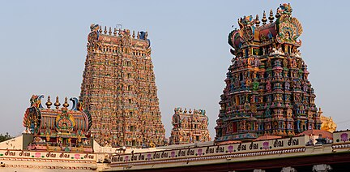

மதுரை மாவட்டம்
MADURAI DISTRICT
VANNKKAM MADURAILA !!!!

Madurai (/ˈmʌdʊraɪ/ MUH-doo-rai,[3][failed verification][4][failed verification] US also /ˌmɑːdəˈraɪ/ MAH-də-RY,[4][5][6] Tamil: [mɐðuɾɐi̯]) is a major city in the Indian state of Tamil Nadu. It is the cultural capital of Tamil Nadu and the administrative headquarters of Madurai District. As of the 2011 census, it was the third largest urban agglomeration in Tamil Nadu after Chennai and Coimbatore and the 33rd most populated city in India.[7] Located on the banks of River Vaigai, Madurai has been a major settlement for two millennia and has a documented history of more than 2500 years.[8][9] It is often referred to as "Thoonga Nagaram", meaning "the city that never sleeps"
Madurai is one of the many temple towns in the state which is named after the groves, clusters or forests dominated by a particular variety of a tree or shrub and the same variety of tree or shrub sheltering the presiding deity. The region is believed to have been covered with Kadamba forest and hence called Kadambavanam.[19] The city is referred by various names including "Madurai", "Koodal", "Malligai Maanagar", "Naanmadakoodal" and "Thirualavai". It is believed that Madurai is the derivative of the word Marutham, which refers to the type of landscape of the Sangam age. A town in the neighbouring Dindigul district is called Vada Madurai (North Madurai) and another in Sivagangai district is called Manamadurai. The different names by which the city has been referred to historically are listed in the 7th-century poem Thiruvilayaadal Puraanam written by Paranjothi Munivar.[20][21] Vaishnava texts refer to Madurai as the "southern Mathura", probably similar to Tenkasi (southern Kashi)
The Vaigai is a river in the Tamil Nadu state of southern India; it passes through the towns of Theni, Madurai and Ramanathapuram.[2] It originates in Varusanadu Hills, the Periyar Plateau of the Western Ghats range, and flows northeast through the Kambam Valley, which lies between the Palani Hills to the north and the Varushanad Hills to the south. The Vattaparai Falls are located on this river. As it rounds the eastern corner of the Varushanad Hills, the river turns southeast, running through the region of Pandya Nadu. Madurai, the largest city in the Pandya Nadu region and its ancient capital, lies on the Vaigai. The river empties into the Palk Bay near Alagankulam, close to Pamban Bridge in Ramanathapuram District. The Vaigai is 258 kilometres (160 mi) long, with a drainage basin 7,031 square kilometres (2,715 sq mi) large.[3] This river flows through 5 districts namely Theni, Dindigul, Madurai, Sivagangai and Ramanathapuram and this river Serves as a Lifeline for 6 districts namely Theni, Dindigul, Madurai, Sivagangai, Virudhunagar and Ramanathapuram as farmers of all these districts are greatly depends on this river water.

The forest area in Theni district is about 33.70%. There are 27 forest areas in the district, constituting a total area of 795.81 km2 (307.26 sq mi). Of these, 19 areas fall under the Reserve Forest category with 255.44 km2 (98.63 sq mi) and 8 areas under Reserve Land category with 540.37 km2 (208.64 sq mi). Total area of forest under green cover classification was 806.86 km2 (311.53 sq mi). Dense forest and sparse forest are 292.81 km2 (113.05 sq mi) and 22.43 km2 (8.66 sq mi), respectively. There is no unclassed forest type in the district. About 44.65 km2 (17.24 sq mi) of artificial forest area are cultivated in the district. Wattle, softwood, fuel wood, cashew, neem, and tamarind are the main forest plantation species in the district.[6] The forest area in the district is 1,179.29 km2 (455.33 sq mi), which is 40.98% of the total geographical area of the district.[16] The Meghamalai Wildlife sanctuary, Srivilliputhur elephant reserve, and part of Kodaikanal Wildlife Sanctuary are situated in Theni district.